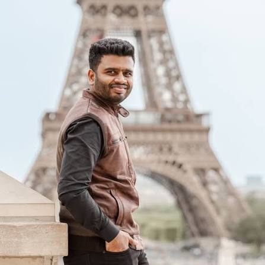

Consultant Pediatrician · Hassan, Karnataka
Dr Venugopal S
MD Paediatrics — child health, one milestone at a time
Practising pediatrician at Tanya Speciality Hospital, Hassan, with a clinical focus on neonatal care, growth & development monitoring, and evidence-based paediatric medicine.
About
Dr Venugopal S completed his MBBS at Hassan Institute of Medical Sciences (2015) and went on to earn his MD in Paediatrics from Bangalore Medical College and Research Institute (2020). He served as Senior Resident at Mandya Institute of Medical Sciences before moving into consultant practice.
Today he practises as a Consultant Pediatrician at Tanya Speciality Hospital, Hassan, seeing infants and children through routine care, acute illness, and long-term developmental follow-up — with particular clinical interest in neonatal resuscitation readiness and haematology-linked paediatric conditions.
Experience
Reseacrch & Publications
Comparison Between Rota Vaccine Variants by GSK
A comparative study weighing Rotarix against Rotateq, evaluating protection profile and practical suitability for paediatric immunisation schedules.
Joint Health Assessment of Haemophilia Children
Assessment using the HJHS 2.1 scoring system among children with Haemophilia to evaluate joint health during long-term disease management.
Infantile Tremor Syndrome
Clinical presentation, laboratory investigations and treatment outcomes of Vitamin B12 deficiency among infants diagnosed with Infantile Tremor Syndrome.
Featured Video
Bring your child in for a visit.
Consultations at Tanya Speciality Hospital, Hassan — for newborn care, routine check-ups, vaccinations, and everything in between.